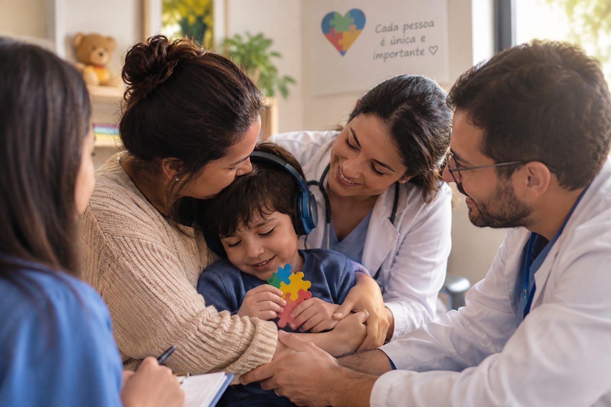

Cuidar, acolher e trasformar vidas
"Cada pessoa merece ser acolhida, respeitada e cuidada"

Sobre a Instituto ConectaTEA
Nossa ONG tem como objetivo oferecer apoio e atendimento especializado para pessoas autistas e suas famílias. Buscamos proporcionar um espaço acolhedor, seguro e preparado para atender diferentes necessidades.
Oferecemos e apoiamos o acesso a profissionais especializados, como psicólogos, terapeutas, neurologistas, psiquiatras e outros profissionais da área da saúde, contribuindo para um acompanhamento individualizado e humanizado.
Nosso propósito é promover qualidade de vida, desenvolvimento, inclusão e apoio às famílias, oferecendo cuidado profissional e orientação em todas as etapas.
Nossos Objetivos
Nosso principal objetivo é oferecer atendimento especializado e humanizado para pessoas autistas, contribuindo para seu desenvolvimento, bem-estar e qualidade de vida.
Buscamos:
- Facilitar o acesso a terapias e profissionais especializados.
- Oferecer acompanhamento com profissionais como psicólogos, neurologistas e psiquiatras.
- Apoiar as famílias com orientação e informação.
- Incentivar a inclusão e o respeito às diferenças.
- Criar um ambiente seguro, acolhedor e acessível.
- Contribuir para o desenvolvimento e a autonomia de cada pessoa atendida.
Missão
Nossa missão é oferecer atendimento especializado, acolhimento e suporte às pessoas autistas e suas famílias. Buscamos facilitar o acesso a profissionais e terapias de qualidade, promovendo desenvolvimento, autonomia, bem-estar e inclusão.
Acreditamos que cada pessoa merece ser cuidada com respeito, atenção e dignidade, considerando suas necessidades e características individuais.